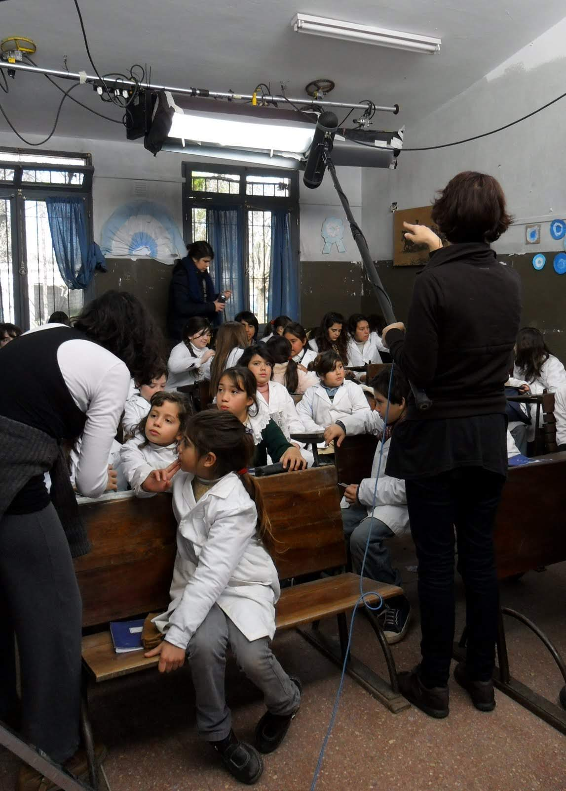
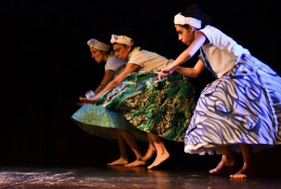

El premio, largometraje
Dirección: Paula Markovitch.Diseño de vestuario: Macarena Pazos y Victoria Pugliese
Vestimos alrededor de 70 personajes.Rodada en julio 2010 en San Clemente del Tuyú.

Gran pelicula, grandes recuerdos!Fuimos nomidadas en los premios Ariel, Mexico.
Santo y pagano, ofrendas de fe, Danza
Obra de danza afro. Diseñamos y realizamos el vestuario junto a MAcarena Pazos.

Dirección: Cecilia Benavidez, Marcos Remolgado
Las horas muertas, teatro
Publicidades
En Bs As y en Ciudad de Mexico trabajé en variados comerciales como asistente de vestuario.
MTV, Liliana Flores
Asistente de vestuario para MTV.